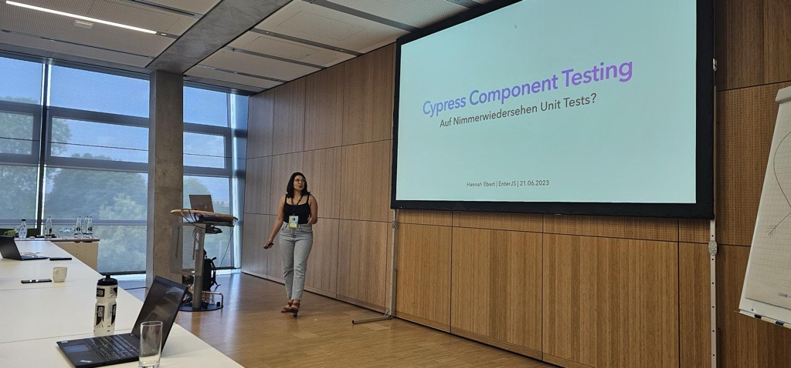

Breaking Your UI into a Sustainable Component Hierarchy
How to slice up your components
Hannah Ebert
adesso SE
Software Architect

Agenda
What
Why
How
When
WHAT
What is a Component?
A self-contained, reusable piece of code.
Defines the structure and behavior of a part of a user interface (UI).
Components can be as simple as a button or as complex as a form.
What does self-contained mean
A component should not rely on external dependencies.
It should be able to function independently.
Components should be easy to understand and maintain.
Component Slicing
Breaking down the UI and application logic into smaller components.
Each component represents a discrete part of the user interface.
WHY
Apple Website - 1998
Apple Website - 2024
With the rising complexity in modern web applications, the ability to structure components in a
scalable, maintainable, and efficient way has become essential.
4 Benefits of thoughtful component slicing
Benefit 1: Reusability
Components can be reused across different pages or views within the application.
Reduces code duplication and improves development efficiency.
Improves development efficiency.
Benefit 2: Maintainability
Smaller components are easier to understand, modify, and debug.
Simplifies maintenance
reduces the risk of introducing bugs when making changes.
Benefit 3: Scalability
As the application grows, a component-based architecture allows for better scalability.
Developers can work on different parts of the UI independently.
Enhancing collaboration and speeding up development.
Benefit 4: Testing
Isolated components are easier to test individually.
Leading to more comprehensive unit testing and improved overall application quality.
Brace Yourself - The Theory Part
Core Software Architecture Patterns
A. Atomic Design
• Purpose: Introduced by Brad Frost, this pattern organizes components into five levels:
• Atoms: Basic UI elements (e.g., buttons, inputs).
• Molecules: Simple groupings of atoms (e.g., search bar with input and button).
• Organisms: Complex components combining atoms and molecules (e.g., a header with a logo, navigation
links, and a search bar).
• Templates: Page structures filled with components.
• Pages: Realized templates with actual data.
• Advantages: Makes it easy to scale UI designs and provides consistent structure.
• Tips: Use atomic design to ensure that components are small, independent, and reusable.
B. Container-Presenter Pattern
• Purpose: This pattern separates components into two categories:
• Containers: Handle business logic, data-fetching, and state.
• Presenters: Purely visual components that receive props and render UI.
• Advantages: Improves separation of concerns and simplifies testing of UI components.
• Tips: In React, you can use hooks in container components for side effects and state, while presenters
focus solely on rendering.
C. Component Composition (Functional Composition)
• Purpose: Builds UIs by composing small, single-purpose components into more complex ones.
• Advantages: Reduces the need for inheritance and improves readability by focusing on smaller,
purpose-driven components.
• Tips: Use higher-order components (HOCs) or hooks in React, directives in Angular, and mixins in Vue
to abstract shared logic.
Single Responsibility Principle: Each component should have a single, well-defined responsibility. For example, a "SearchBar" component handles search input and submission, while a "SearchResult" component displays the search results.
State Management: Decide how state will be managed within and across components. Frontend frameworks often provide state management solutions (e.g., React's useState, Vuex, or Angular's NgRx) to handle complex state-related tasks.
Data Fetching and API Integration: Consider how components will fetch data from backend APIs or other data sources. Use appropriate patterns like Axios (for data fetching) or GraphQL to integrate with backend services.
Styling and CSS: Choose a styling approach (e.g., CSS-in-JS, CSS Modules, or traditional CSS) to ensure components are visually consistent and maintainable.
DRY - Don’t Repeat Yourself
. Write Lean Components
• Aim for components under 200 lines. If a component grows beyond this, consider breaking it down.
C. Keep the Component API Small
• Limit the number of props; use objects for related values, e.g., a style prop instead of individual
fontSize, color, etc., props.